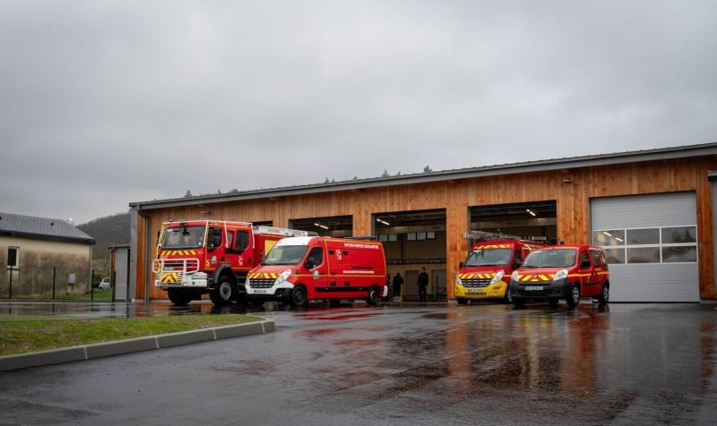

Centre d'incendie et de secours
Une nouvelle caserne pour nos pompiers
Depuis le 12 février 2026, les sapeurs-pompiers de Saint-Martin-de-Boscherville sont installés dans leur nouvelle caserne, route de Quevillon.
50sapeurs-pompiers, dont 9 jeunes
900m² de bâtiment
1 540m² d'aire de manœuvre
18ou 112
en cas d'urgence
en cas d'urgence
Photo : SDIS 76